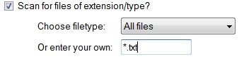
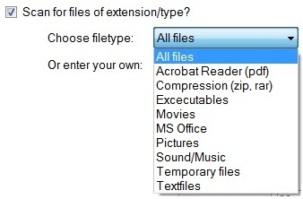
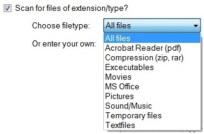

Example of what and how to enter filetype ('*.txt' means all files of type .txt)

The different choices in extensions
Example of what and how to enter filetype ('*.txt' means all files of type .txt)

The different choices in extensions
The following filetypes/extensions is included:
- Acrobat Reader - Files of type:
- Compression - Files of type:
- .zip
- .rar
- Excecutables - Files of type:
- .exe
- Movies - Files of type:
- .avi
- .mkv
- .mov
- .mp4
- .mpeg
- .vob
- MS Office (from 2003 - 2010) - Files of type:
- (Access) .accdb
- (Word) .doc
- (PowerPoint) .pps
- (PowerPoint) .ppt
- (Excel) .xls
- Pictures
- .bmp
- .gif
- .jpg
- .jpeg
- .png
- Sound/Music - Files of type:
- .aac
- .aiff
- .m4p
- .mp3
- .wav
- .wma
- Temporary Files - Files of type:
- .tmp
- Textfiles - Files of type:
- .rtf
- .txt
<Current version 1.0.0.0>